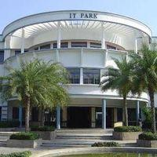
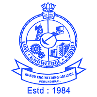
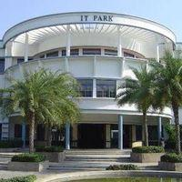
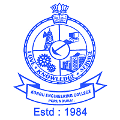

Kongu Engineering College, one of the foremost multi professional research-led Institutions is internationally a recognized leader in professional and career-oriented education. It provides an integral, inter-disciplinary education - a unique intersection between theory and practice, passion and reason. The College offers courses of study that are on the frontiers of knowledge and it connects the spiritual and practical dimensions of intellectual life, in a stimulating environment that fosters rigorous scholarship and supportive community. This Institute is a great possession of the committed Trust called 'The Kongu Vellalar Institute of Technology Trust' in Erode District, Tamilnadu
The word 'Kongu' refers to a region of the southern state of India and the term 'Kongu Vellalar' specially means the agricultural community, predominated in the west of Tamilnadu, which was deprived of educational facility in those days. To achieve technical excellence in their rural areas, 41 philanthropists from different walks of life who realized the need for technical education for their region's economic strides, formed collectively a Trust called 'The Kongu Vellalar Institute of Technology Trust' and they tried to promote and develop equality of opportunity for the rich and the poor.